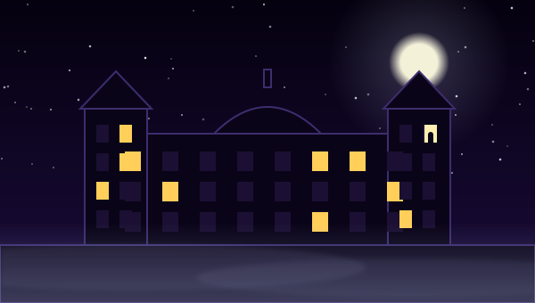

El Palacio de Linares
La niña que nunca se fue

- 📍 DóndePlaza de Cibeles, 2 (hoy Casa de América)
- 🕰️ CuándoFinales del siglo XIX
- 🚇 MetroBanco de España
- Nivel de misterio👽👽👽👽👽
Pasas por delante cada vez que cruzas Cibeles. Miles de coches al día, turistas haciéndose fotos, el Palacio de Comunicaciones enfrente. Nada que temer. Pero cuando cae la noche y se apagan las luces de la Casa de América, hay quien jura que en una de las ventanas altas aparece una silueta pequeña. Demasiado pequeña para ser de un adulto.
El palacio lo mandó levantar José de Murga, un banquero inmensamente rico al que el rey Amadeo de Saboya nombró marqués de Linares en 1873. Se casó con Raimunda de Osorio contra la voluntad de su padre, que nunca aprobó aquella boda. Y aquí es donde la historia se tuerce.
Cuenta la leyenda que, tras la boda, José encontró una carta que su padre había dejado escrita antes de morir. Una carta que lo cambiaba todo: Raimunda no era una desconocida. Era su hermana. Hija de una aventura de su padre con una cigarrera de Lavapiés.
Lo que viene después se susurra en voz baja. Que hubo una niña. Que el matrimonio, aterrado por el escándalo, no podía permitir que nadie la viera. Y que la pequeña, a la que llaman Raimundita, acabó emparedada en algún rincón del palacio. Desde entonces se la oye llorar por los pasillos, se la escucha cantar en la casita de muñecas del jardín y, de vez en cuando, susurra una palabra: "mamá".
En 1990, con el palacio abandonado y a punto de ser restaurado, unos investigadores entraron con grabadoras. Lo que dijeron haber captado, voces infantiles entre el silencio, recorrió España entera. Las famosas psicofonías del Palacio de Linares. Desde entonces, guardias de seguridad y trabajadores han contado de todo: puertas que se cierran solas, pasos donde no hay nadie, una presencia que te mira desde lo alto de la escalera.
Los documentos dicen otra cosa: los marqueses no tuvieron hijos y adoptaron a una niña, Raimunda Avecilla, que creció y vivió. La carta y la supuesta dispensa del Papa nunca han aparecido. Investigaciones posteriores relacionaron las psicofonías de 1990 con la promoción de un libro, y las "caras" de la capilla resultaron ser manchas de humedad.

EL TROLLACO OPINA: He estado en la cafetería de la Casa de América. El café, buenísimo. Lo de que alguien me soplara en la nuca al pagar... prefiero no hablar de ello.